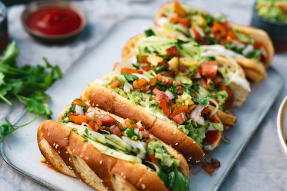

|  | DescriptionA completo is a Chilean-style hot dog (yes, there is a hot dog under there) in a fresh, soft bun that’s topped with diced onions, chopped tomatoes, ketchup, mustard, and mashed avocado. In Chile, they add lots of mayo to the mix but their mayonnaise is different than ours in the US, so we decided not to use that here. |
|